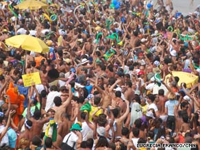

This paragraph is block so it stretches all the way to the right using display:block
This div is inline so it does not stretch to the right using display:inline
Let's start the story here. This is done by floating the image left.
Thousands of people celebrated Friday on crowded Copacabana beach as the announcement that Brazil had been chosen as the 2016 Olympics host played live over huge screens erected above the sand.
"It was a fantastic victory. We beat the big cities. Passion talked louder," said one man as he danced to live samba music in front of the stage.
Rio de Janeiro beat out Chicago, Tokyo and Madrid to become the first South American city to host the Games, something President Luis Inacio Lula da Silva made clear during his pitch to the International Olympic Committee.
"It is a time to address this imbalance," he told committee members making the selection in Copenhagen, Denmark. "It is time to light the Olympic cauldron in a tropical country."
Happiness was a big part of Rio's pitch after it was voted the happiest city in the world by Forbes magazine.
On Friday, thousands of people piled onto the beach wearing green and yellow, many with the end.
Let's start the story here. This is done by floating the image right, and then using a clear:right to position the text after the image as if it had not been floated.
Thousands of people celebrated Friday on crowded Copacabana beach as the announcement that Brazil had been chosen as the 2016 Olympics host played live over huge screens erected above the sand.
"It was a fantastic victory. We beat the big cities. Passion talked louder," said one man as he danced to live samba music in front of the stage.
Rio de Janeiro beat out Chicago, Tokyo and Madrid to become the first South American city to host the Games, something President Luis Inacio Lula da Silva made clear during his pitch to the International Olympic Committee.
"It is a time to address this imbalance," he told committee members making the selection in Copenhagen, Denmark. "It is time to light the Olympic cauldron in a tropical country."
Happiness was a big part of Rio's pitch after it was voted the happiest city in the world by Forbes magazine.
On Friday, thousands of people piled onto the beach wearing green and yellow, many with the end.